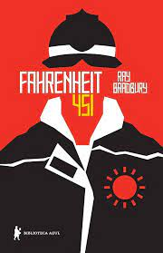

Fahrenheit 451
Escrito após o término da Segunda Guerra Mundial, em 1953, Fahrenheit 451, de Ray Bradubury, revolucionou a literatura com um texto que condena não só a opressão anti-intelectual nazista, mas principalmente o cenário dos anos 1950, revelando sua apreensão numa sociedade opressiva e comandada pelo autoritarismo do mundo pós-guerra. Agora, o título de Bradbury, que morreu recentemente, em 6 de junho de 2012, ganhou nova edição pela Biblioteca Azul, selo de alta literatura e clássicos da Globo Livros, e atualização para a nova ortografia.